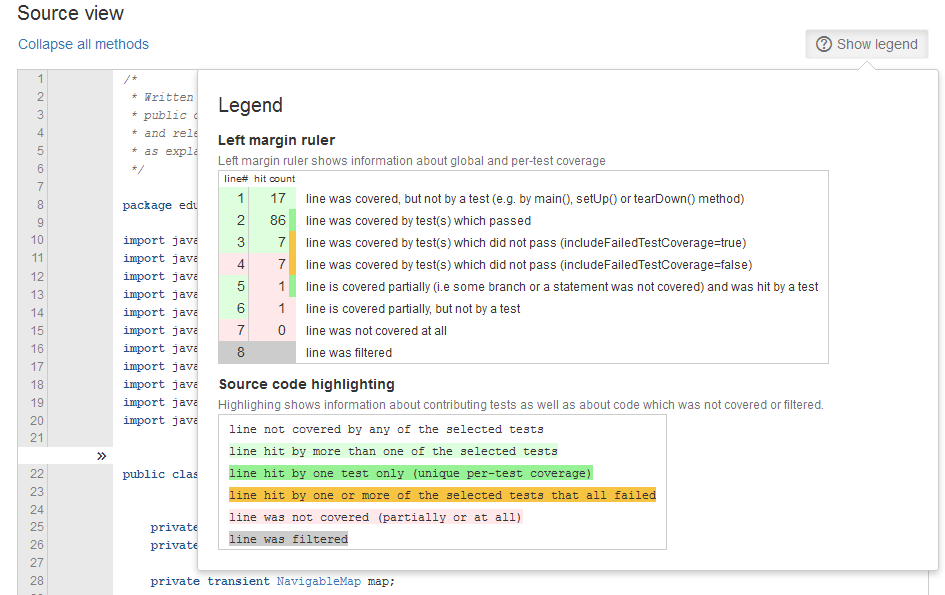

In Clover HTML reports, test coverage is indicated by the following color-coded legend.

The page margin has three color indicators:
- left half with line number is the "optimistic marker", which is highlighted in:
- green when at least part of the code line was covered during execution
- otherwise red if it was not covered at all
- right half with number of hit counts (i.e. how many times given line was executed) is the "pessimistic
marker" which is highlighted in
- red if at least part of line was not executed or when branch expression was not evaluated to both true and false
- otherwise green if the whole line was fully covered
- narrow strip related with per-test code coverage, which is:
- dark green if given source line was executed at least once from a successful test case (i.e. test has passed), or
- dark yellow if given source line was executed from one or more test cases, but all tests were failed or
- empty if given code was not executed from a test case (for instance from "main()" method or called by JVM GC "finalize()" method)